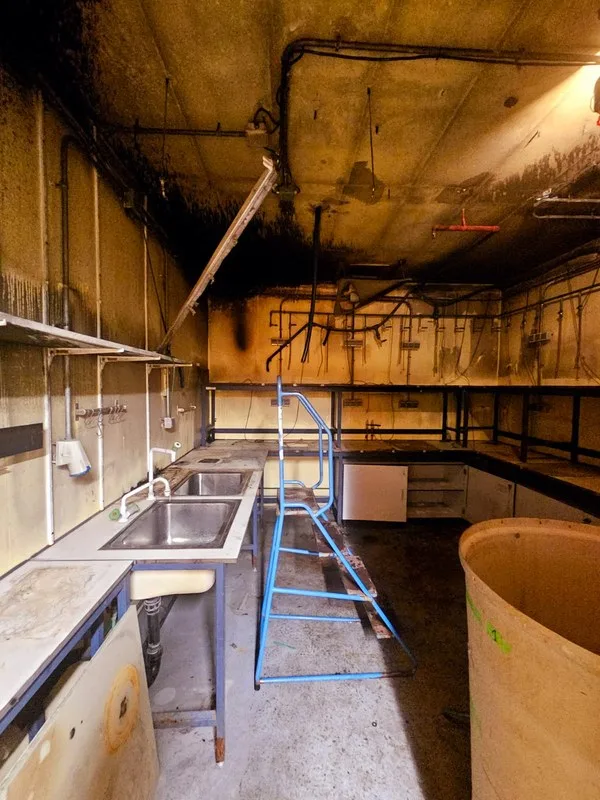
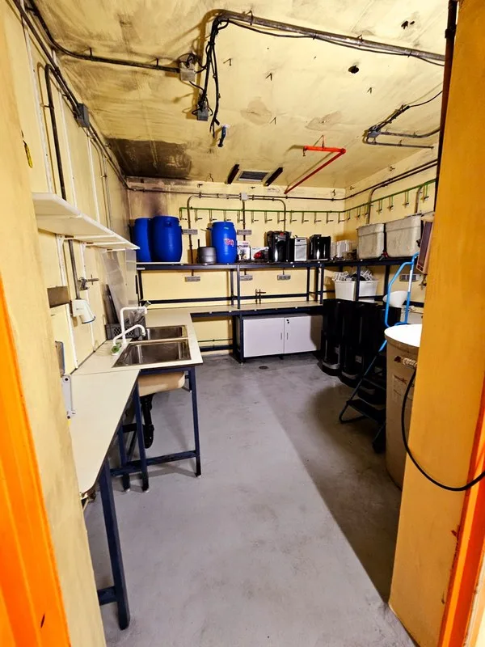

Después de un incendio, tu casa te necesita. Nosotros también.
Has vivido lo peor: el fuego. Ahora viene lo difícil: limpiar la ceniza que dejó atrás. El humo se adhiere a paredes, ropa, conductos. El hollín mancha todo. El olor persigue. Tres décadas llevamos aquí para cambiar eso: eliminamos lo que el incendio dejó, de forma definitiva, para que recuperes tu espacio.
📍 Urgencias 24h - Zona Norte y Plaza Castilla
RECUPERA TU CASA AHORA
¿Necesitas Limpieza por Incendios en Madrid?
Nano Nex ofrece servicio urgente 24/7 de limpieza técnica post incendio con eliminación de hollín, ozono y desescombro. Contamos con certificación ITEL y atención inmediata en toda Madrid. Llama ahora al 632 107 272 para presupuesto gratuito y gestión de seguros.
Sobre Nano Nex
Más que limpieza, devolvemos la ilusión
En Nano Nex combinamos empatía con rigor técnico para realizar la limpieza post incendio más eficaz del mercado.
Somos empresa certificada por ITEL y ANECPLA. Utilizamos tecnología de vanguardia y ozono para una limpieza por incendios profunda.
- Empatía total: tratamos tus cosas con delicadeza.
- Certificados oficiales de limpieza.
- Honestidad: precio cerrado.

¿Necesitas ayuda ahora?
Déjanos tus datos y te llamamos nosotros. Presupuesto gratuito.
📞 Nosotros te llamamos — sin compromiso.
Resultados Reales: El "Antes y Después"
Transformamos espacios devastados en lugares impecables.

Baños y Viviendas
Recuperación total de alicatados y sanitarios en cada Limpieza de Incendio.

Cocinas Industriales
Desengrasado técnico y eliminación de hollín en campanas.

Naves y Pistas
Trabajos en altura. Expertos en Limpieza de incendios Madrid.

Vaciado y Desescombro
Gestión integral de residuos y descontaminación del espacio.

Laboratorio — Antes
Laboratorio de investigación devastado por el hollín y el humo tras un incendio.

Laboratorio — Después
El mismo laboratorio recuperado: paredes, techo y equipos descontaminados. Ver caso →
Preguntas Frecuentes sobre Limpieza de Incendios
Respuestas directas a las dudas más comunes sobre limpieza post incendio en Madrid
❓ ¿Cómo actuáis en una Limpieza de Incendio urgente?
Respuesta: Desplegamos un equipo profesional en menos de 24 horas. El proceso es:
- Evaluación inmediata de daños
- Despliegue de equipo certificado ITEL
- Inicio de descontaminación inmediato
- Seguimiento 24/7 durante el proceso
❓ ¿Qué incluye el servicio de Limpieza Post Incendio?
Nuestro servicio integral incluye:
- Retirada de escombros y muebles dañados
- Limpieza técnica de hollín en paredes y techos
- Recuperación y limpieza de enseres salvables
- Tratamiento desodorizante con ozono profesional
- Limpieza de sistemas de ventilación
- Informe técnico detallado para seguros
❓ ¿Cuánto tarda una limpieza de incendios?
El tiempo depende de la gravedad:
- Vivienda pequeña (< 100 m²): 48-72 horas
- Vivienda grande (> 200 m²): 72-96 horas
- Local comercial: 4-6 días
- Incendios severos: Consulta personalizada
❓ ¿El seguro cubre la limpieza por incendios?
Sí, generalmente sí. La mayoría de pólizas de hogar y comercial incluyen limpieza post incendio. Nosotros:
- Elaboramos informe técnico detallado
- Documentamos todo con fotos antes/después
- Facilitamos la gestión con la aseguradora
- Trabajamos directamente con seguros
❓ ¿Dónde prestáis servicio de Limpieza de incendios?
Cobertura en toda Madrid: Desde nuestra base en Plaza de Castilla, cubrimos:
- Zona Norte (urgencia): Alcobendas, San Sebastián, Tres Cantos, Colmenar Viejo
- Madrid Capital: Todos los distritos
- Zona Sur: Getafe, Leganés, Alcorcón, Móstoles, Fuenlabrada
- Zona Este: Torrejón, Alcalá de Henares, Coslada
❓ ¿Qué es el hollín y por qué es peligroso?
El hollín es: Partículas microscópicas de carbono negro producidas por combustión incompleta. Peligros principales:
- Partículas carcinógenas al respirar
- Penetra en pulmones y tejidos
- Se adhiere a ropa, muebles y sistemas de aire
- Requiere limpieza profesional profunda
- NO se elimina con limpieza ordinaria
❓ ¿Cómo elimináis el olor a humo persistente?
Técnicas profesionales:
- Tratamiento de ozono (neutraliza moléculas de olor)
- Limpieza profunda de textiles y muebles
- Descontaminación de sistemas de ventilación
- Sellado de superficies porosas
- Garantía de eliminación de olor
❓ ¿Cuál es el coste de una limpieza post incendio?
Precio según: Depende de superficie, gravedad de daños y tipo de inmueble. Ofrecemos:
- Presupuesto sin compromiso
- Evaluación completa en 24h
- Trabajamos con seguros para cobertura
- Opciones de financiación disponibles
Lo que dicen nuestros clientes
Reseñas reales de clientes en Google.
"Contraté esta empresa porque hubo un incendio en mi edificio y se me llenó la casa de humo y hollín tóxico. Estoy muy satisfecho con la limpieza que realizaron, tanto por lo exhaustivo del trabajo como por los equipos que trajeron. El encargado se mostró muy comprensivo con la situación."
Carlos Díaz"Nos limpiaron la casa después de un incendio en el edificio y mi piso era todo hollín. No puedo estar más contenta y agradecida, no solo por la limpieza, sino por la calidad humana de Enrique y su equipo. 100% recomendable."
Beatrice Zschiesche"Queremos dar las gracias a Nano Nex, superó nuestras expectativas con su servicio de limpieza de incendios. Su equipo demostró profesionalismo y eficiencia. Estamos impresionados con la minuciosidad y calidad del trabajo realizado."
Albacete Naranjo"Los llamamos por un siniestro en casa, hicieron la limpieza de paredes, techos y armarios, una limpieza integral. Enrique, que organiza el trabajo, conoce perfectamente su oficio."
La Yedra De Málaga"Buenos profesionales, han realizado una limpieza de incendios muy efectiva y exhaustiva: han vaciado armarios y fregado paredes. Los recomiendo, son muy profesionales y saben cómo trabajar."
Karsyn Ross"Cuando por desgracia tengan un incendio en casa y necesiten hacer la limpieza, deben pedir presupuesto a esta empresa, son especialistas. En casa lo dejaron todo perfecto, un gran equipo."
Ángel MadridComparación de Servicios de Limpieza
Encuentra el servicio adecuado para tu necesidad
| Tipo de Servicio | Tiempo estimado | Incluye ozono | Informe seguro | Garantía |
|---|---|---|---|---|
| Limpieza básica (hollín en superficies) | 24-48h | ✓ | ✓ | 1 mes |
| Limpieza integral (completa + ozono) | 48-72h | ✓ | ✓ | 6 meses |
| Limpieza premium (integral + ventilación) | 72-96h | ✓ | ✓ | 1 año |
| Incendio severo (evaluación personalizada) | Consulta | ✓ | ✓ | Consulta |
📍 Cobertura Express Zona Norte
Desde nuestra base en Plaza de Castilla, llegamos antes que nadie a:
Limpieza de Incendios por zonas de Madrid
Servicio urgente post incendio en tu municipio o barrio. Elige tu zona:
🏙️ Principales municipios
- Alcalá de Henares
- Getafe
- Leganés
- Alcorcón
- Móstoles
- Fuenlabrada
- Torrejón de Ardoz
- Alcobendas
- San Sebastián de los Reyes
- Tres Cantos
- Colmenar Viejo
🏠 Barrios de Madrid capital
Solicitar Presupuesto
Tu solución empieza aquí.
Nano Nex Madrid
📍 Plaza de Castilla, 3, Madrid
📞 632 107 272
✅ Presupuesto Gratuito
✅ Informe para el Seguro
✅ Certificado de Limpieza
📞 Déjanos tus datos y nosotros te llamamos.